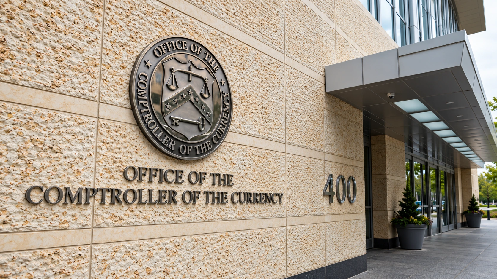

U.S. Bank Regulator Urges Community Banks Into Stablecoins as Licensing Deadline Nears
The OCC is encouraging smaller lenders to explore payment tokens, while its official implementation page says applications and waiver requests are not yet open.

The Office of the Comptroller of the Currency is encouraging community banks to enter the payment-stablecoin market, bringing smaller U.S. lenders into a debate often dominated by large banks and crypto companies. CoinDesk reported Monday that the agency's outreach includes the possibility of seeking permission to issue stablecoins. It is an invitation to explore the business, rather than approval of a new bank-issued token.
There is an immediate procedural limitation. The OCC's official GENIUS Act implementation page says it is not yet accepting applications or waiver requests. Intake depends on final Office of Management and Budget approval of the information collection associated with application forms. The regulator says it will announce the opening in a separate press release and update its page accordingly.
For consumers, the significance lies in who may eventually provide digital-dollar payments and under what controls. For banks, it is a strategic choice about customer relationships, payment services and funding. The agency's encouragement does not establish that issuing a token will be profitable for every institution or that customers will automatically prefer it to existing payment methods.
A new invitation follows last week's rule
The outreach follows the OCC's October 21 announcement of a final rule implementing the GENIUS Act for issuers and activities within its jurisdiction. The rule takes effect January 18, 2027. Our coverage of that final rule explains the earlier regulatory decision. Monday's development is the message directed at smaller lenders, rather than a second announcement of the same rule.
The OCC says its framework addresses reserve backing, redemption and risk management, among other requirements. Its announcement also identifies work still to come on Bank Secrecy Act, anti-money-laundering and sanctions matters through a separate rulemaking with Treasury. A final rule in one part of the framework therefore does not mean every related regulatory process has finished.
Issuing a stablecoin, providing services to an issuer and using a token to make a payment are different business activities. A bank could assess demand and operational requirements without deciding to create its own coin. Our explanation of stablecoin backing and redemption describes why the ability to exchange a token for its reference currency matters more than a dollar symbol on a screen.
The application process will require more than a launch plan
The OCC's application guidance calls for information on the business plan, management, reserves, issuance and redemption, capital, liquidity and risk controls. It also covers third-party arrangements, compliance and audit functions. Preparing that material is a substantive operational task. A prospective issuer needs to show how the service will function when customers want their money back, not simply how quickly a token can move.
Under the guidance, the agency will notify an applicant within 30 days whether a submission is substantially complete. It commits to acting no later than 120 days after that determination. That latter clock does not begin with an expression of interest or an incomplete proposal. Nor does a review deadline mean that every applicant must receive permission to operate.
Existing issuers with substantially complete applications pending by January 18 may request temporary waivers from specified requirements. The guidance describes a route intended to limit disruption while applications are reviewed, with individual requests assessed on their merits. Prospective new issuers should not treat that transition mechanism as an automatic right to launch before obtaining the required approval.
Reserve deposits bring their own banking questions
In its final-rule discussion, the OCC acknowledges that deposits used as stablecoin reserves could currently be less stable funding than other deposit types. It does not require issuers to place those deposits with community banks or force community banks to accept them. Smaller lenders retain a business judgment about whether that exposure fits their balance sheets and risk appetite.
The competitive backdrop also includes established token businesses, as our reporting on stablecoin revenue sharing illustrates. Entering payments means competing on distribution, reliability and economics as well as regulatory status. The practical next milestones are the opening of applications and evidence of specific bank proposals. Monday's invitation broadens the field of potential participants; it does not yet tell readers which banks will issue tokens or which services will gain customers.
Sources and methodology
Sources checked October 26, 2026. Company statements, reported findings and forecasts are attributed in the text. Financial and operational implications are editorial analysis.
- CoinDesk: October 26 outreach to community banks
- OCC: official October 26 social post, identified in CoinDesk reporting
- OCC: current GENIUS Act implementation and application status
- OCC Bulletin 2026-51: applications, waivers and submission guidance
- OCC: October 21 final-rule announcement
- Federal Register: final rule, including community-bank reserve-deposit considerations